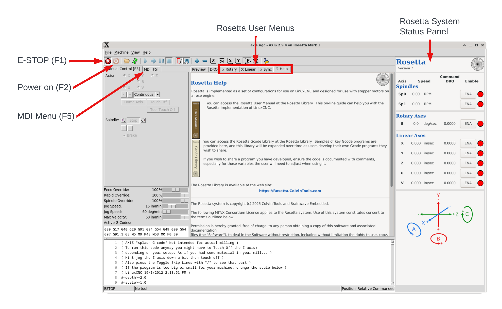

The Rosetta system is designed to
The main screen displayed when Rosetta is started is shown below. The key elements users will need are noted. 
E-STOP is always engaged when the system is started. You must disengage the E-STOP before any other operations can be performed. This can be done by either clicking on the indicated icon, or by using the F1 key. Either will toggle this state.
Power on is used to “power the machine on”. This is always off when the system is started, and toggling the E-STOP does not affect this. You can either click on the indicated icon, or use the F2 key to toggle this.
Whenever an error is encoutered, the system moves to a powered off state also. It is a good practice to clear the error first (by clicking on the X for the error).
Rosetta User Menus are:
Rather than lengthening the tab names by calling them “Rosetta ...”, the ℛ character is used.
Rosetta System Status Panel shows the status of all axes, and enables the user to enable/disable any axis’ stepper motor.
MDI tab is where G-code program commands can be entered manually, one line at a time. This also shows the Active G-codes which shows which modal G-codes are in effect.
You can either click on the tab, or use the F5 key to access this.
To load a Gcode program file which you wish to execute, click on File at the top of the screen.
|
A
C
G
I |
L R
S
|
|
|